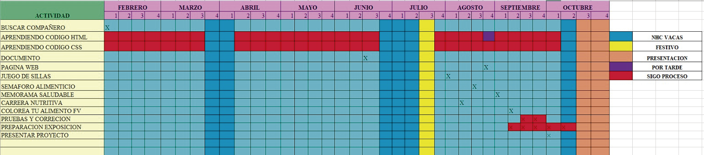

Energía y Alimentación durante la Jornada
¿De qué manera influyen los hábitos alimenticios en los niveles de energía, capacidad de concentración y rendimiento académico de los estudiantes de grado décimo durante la jornada escolar?
Cronograma del proyecto
